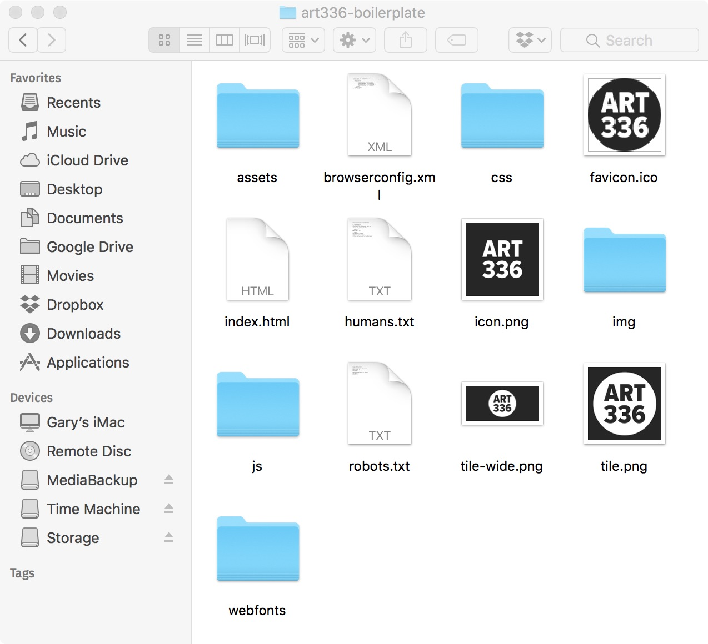
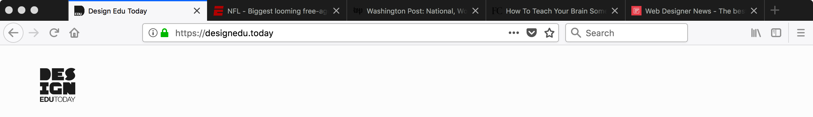
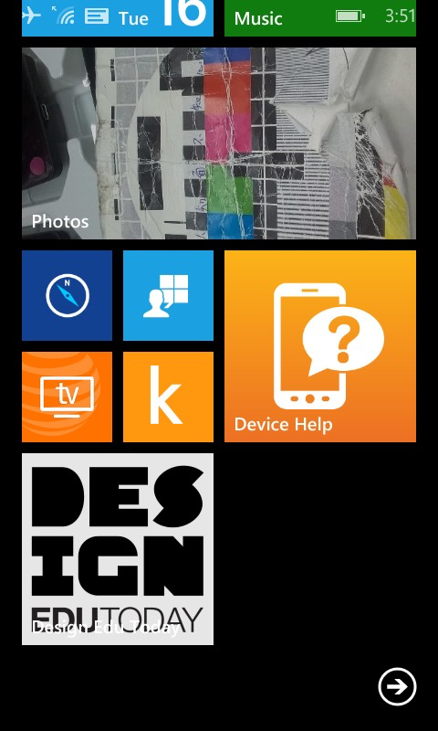

S04: HTML & CSS Boilerplate
Now that you have your domain name pointing to the class web server, and you have setup your domain and subdomain so they appear in the server’s directory, it’s time to create your own web pages. However, before you start creating your own web pages, it’s important to understand what exactly the web browser is looking for when you type in a domain name, also known as a Uniform Resource Locator, or URL.
Unless you supply other instructions, when you enter a URL into a web browser it starts looking for the index file. For example, if you enter washingtonpost.com into your web browser it will automatically look for the index file since you didn’t give it more precise information. Basically, when you type washingtonpost.com, the web browser is actually looking for index.html. Depending on the web server, an index file could end in .html, .htm, .php, .asp, or could have some other proprietary setup not germaine to this course.
Of course, nothing is ever simple. For example, some URL’s give the exact location of a web page, and therefore don’t need to search the web server for an index file. As an example, the following URL from the Washington Post https://www.washingtonpost.com/local/md-politics/republican-outside-groups-take-a-rare-interest-in-deep-blue-maryland/2018/01/12/c5574e00-cefa-11e7-9d3a-bcbe2af58c3a_story.html gives the exact location of the web page on the web server forgoing the need for an index file. While it may seem a bit wordy it’s important to note that for Search Engine Optimization or SEO reasons, the descriptive name will yield better search results.
Now, back to the c5574e00-cefa-11e7-9d3a-bcbe2af58c3a_story.html file that replaces the need for the web browser to search for an index.html file. The rest of the URL describes the location of the c5574e00-cefa-11e7-9d3a-bcbe2af58c3a_story.html file in the web server’s directory or folder structure. This means the c5574e00-cefa-11e7-9d3a-bcbe2af58c3a_story.html file is located in the “12” directory or folder inside the “01” folder, inside the “2018” folder which is inside the “republican-outside-groups-take-a-rare-interest-in-deep-blue-maryland” which is inside the “md-politics” folder, inside of the “local” folder located on the washingtonpost.com web server. Basically, the “/” indicates that a file or folder is within another folder.
So what is the purpose of telling you all this? After all you are Visual Designers, not Web Developers! Simply put, you need to understand the medium you are designing for—the web—and you will be creating .html files as part of the course. Some files will be named index.html and others will have different names. When you come across those with different names, you’ll understand why.
What is a Boilerplate?
As part of this course you will be creating your own HTML pages and changing the default presentation, or look, of those pages with CSS. However, you don’t need to start each project empty handed. Many developers start their projects out with a Boilerplate, a set of folders and files that are common to each project. Since you are going to create a series of web pages throughout the duration of this course, you will first create your own HTML and CSS boilerplate based off the popular HTML5 Boilerplate
“So why not just use the HTML5 Boilerplate for the base of all of the course exercises?”
I’m glad you asked! After completing this course and you go on to design and develop website either for yourself or for clients, you should use HTML5 Boilerplate as a starting point. However, the goal of this course is to help you understand the web as medium, and that includes learning HTML and CSS. If you don’t get the experience creating your own HTML and CSS files, you don’t fully understand the medium you are designing for. Plus, there is a lot of extra, but useful components in the HTML5 Boilerplate that we just don’t need for this course.
Before you go on to the next section, make sure to download the starter boilerplate files I’ve prepared for you. The boilerplate I’ve supplied is in no way complete! You will need to complete the following screencasts to build your own boilerplate that will be the base for each exercise in the course.
The Boilerplate Contents

After you download and unzip the boilerplate you will see the same contents as in the above image. If you are using a Windows computer you may also see one or more files named .DS_Store which isn’t picture here. The .DS_Store file is proprietary to the macOS operating system. Windows users can delete the file, it won’t affect anything. MacOS users who can see the file through programs like Brackets or CyberDuck can delete the file too, but it will just be recreated again, so basically leave it alone.
Folders
Within the boilerplate folder are the assets, css, img, js and webfonts folders. Each has their own unique purpose that I will expound on below and further cover in the screencast.
Assets
The idea of the assets folder is more or less of my own creation. I find that when I’m working on a website that it’s better to store original files such Illustrator, Photoshop, and Sketch. I’ll even put the original raw photographic images in the assets folder as well. Whether you are working solo, with a developer, or as a team, it’s good to keep the original source files in the same place as your html, css, and javascript files. The reason you need to keep your original assets with the web development files has to do with the ever changing nature of the web. In print design once a design has been printed, it can’t be changed. That final print piece can only be discarded or reprinted at substantial cost so most people just live with the results. However, you will discover as you gain experience in web design that clients always want changes…because things can be changed! Because of this, an image may need to be re-cropped or resized, a logo may need to be updated, etc., so it’s important to have the originals on hand to work from.
Tip: Do not upload the assets folder to the web server! Some of the files that you will be supplied throughout the course will easily exceed the space limit on the web hosting account I supplied you. If you upload the assets folder, you run the risk of causing a server error that will keep me from seeing your work.
CSS
The css folder is where you will place all your files that end in the .css file extension. The css folder is more or less industry standard. For example, web browsers will look for a folder named css and look within it for a file called main.css if a proper link to the css file is missing from the HTML file. This is why it’s important to use the standard set by the web design community that has since been adopted by modern web browsers.
main.css
The main.css file will be responsible for the presentation of your website, or in other words, how it looks. The web browser reads the main.css, and all .css files, from top to bottom. That normally wouldn’t be noteworthy, except a web browser can only remember one property declaration. Using a dictionary as an analogy, a css file can hold an unlimited number of different definitions and a web browser will remember them all. However, the web browser can’t remember conflicting definitions. If there are two definitions of the same word in the dictionary, the web browsers would only remember the last one it read.
Switching the analogy back over to css, you the web browser won’t remember conflicting definitions and will remember the one it read last. So, if you declare on line 1 of main.css that the webpage will have an green background, and then declare on line 20 of that same file that the background color of the webpage is pink, the web browser will display a pink background, and forget the earlier definition. Being able to overwrite a previous css declaration is what makes responsive web design possible. Please note, a lot more on CSS will be covered as the course goes along, so this isn’t the final definitive discuss on the subject!
normalize.css
In the css folder you will find the normalize.css file. Normalize does a good job of styling HTML elements with know issues so they remain visually consistent as possible across all browsers and operating systems. This is something you most likely never actually notice unless you look at a web page on different browsers, operating systems, and devices. However, since you have no idea who the end user of a web page will be, it’s important to plan ahead. You can find out more information about Normalize at its website.
IMG
The img folder is also spelled out as images by some front-end developers. The purpose of the img folder is to store all of the optimized images that are part of the visual design of your web page. While I’ve seen both, the majority seem to use the img naming convention and it’s what’s used by the creators of the HTML5 Boilerplate, so we will use it too. Images file formats that you will store in this folder are .gif, .jpg or .jpeg, .png, and .svg.
JS
The js folder is another industry standard folder used to organize files. Specifically, javascript files. Within the folder you will find a file called plugin.js which came from the HTML5 Boilerplate and a vendor folder that contains files from outside developers. The vendor folder operates in much the same way as the assets folder: it’s a place to keep the originals. Even though I have included the js folder as part of the boilerplate, in this course, you won’t be using much javascript. In an oversimplification of javascript, it’s a programming language. While it can be used to manipulate the visual design of a website, it’s true purpose is to add functionality that doesn’t currently exist within HTML and CSS. Since we aren’t trying to add functionality, rather learn the web medium, 99.9% of what you need to know can be done with HTML and CSS.
Webfonts
The webfonts folder is where you would place any webfonts you are self hosting. This folder is purely for organization purposes that would make sense if you were a front-end developer using Github for organizing version controlled projects. Even though you won’t get into learning front-end development best practices as it’s not necessary in this instance to understand the medium of the web, you certainly should follow best practices when they are pointed out to you.
Files
In addition to the folders, you will see a bunch of what may seem to be random files that are included as part of the boilerplate and are important to you as a Visual Designer wether designing for yourself or for a client.
browserconfig.xml
The browserconfig.xml file is important to you as a visual designer because it gives Microsoft browsers information on what icon to show under what circumstances. If you are a Windows user, you’ll understand the importance of creating an icon that takes advantage of the tiled mosaic Microsoft using in their operating systems. You can read more about how Windows utilizes these icons at https://msdn.microsoft.com/library/dn455106.aspx
index.html
As I’ve already mentioned, web servers by default look for the index.html file unless a URL is given containing a direct path to a file, or a full-stack developer changed the default web server settings. Since I’m supplying the web server, only the first two scenarios will apply to us, so you will be creating your own index.html file by following the screencast. The good news is, you only need to do this once. That’s why it’s called a Boilerplate. You will use this index.html file as a starting point in all your projects throughout the remainder of this course, even if you rename it to something other than index.html.
You will need to download this file before starting the screencast!
Site Icons
Within the boilerplate folder, you will notice a series of image files. These icons, as visual designers, are your responsibility. Thought and care needs to go into the design of each one, because each has their own unique use case. If you are not careful, anyone of these icons could be difficult for users to read if they are not designed correctly.
favicon.ico
All of you have subconsciously seen a favicon.ico. It’s the tiny icon you will see on the tab of most web browsers.

In the example above, you will see both the favicon.ico and logo I created for the Design Edu Today podcast. Notice I didn’t simply use the logo for the favicon. Favicons are very small, and therefore don’t hold detail well. When the Design Edu Today logo is reduced to 32×32 pixels and smaller, it is completely illegible. Therefore I created a “D” shaped icon with the letter “EDU” within the shape.
If you look at the favicons in the other tabs in the example above, you will notice many organizations take a similar approach to the design of smaller icons.
icon.png
The icon.png file is used by Apple’s iOS to create icons for the home screen. Since Apple rounds the corner of the icon, you have to be careful with your design choices. Placing content too close to the edge will make the icon look awkward near the corners. You also need to take color into consideration. Since users can pick any type of background image, color, or texture they want, you want to design an icon that will stand out under most conditions.
tile.png and tile-wide.png
These two icons are specific to the Windows operating system, and offer the most opportunities for experimentation in visual design. As you can see in the screenshot below, Windows will display the icon either as a rectangle or square. You don’t have any control over which one as Windows makes the decision based on the number of icons on any given device and the available space. I think the design of the square is tricky in that it can be displayed at both large and small sizes. This means that you if you optimize your design for the larger size, it could lose its legibility at the small size, and vice versa.


humans.txt and robots.txt
These two files don’t have much to do with the visual design of a website, but are important to visual designers nonetheless.
It’s best to think of the humans.txt like a colophon page in a book. This is where you give credit to the people who helped make the website. This information is also available to the public and readable by search engines. So it’s up to you to decide how much information you want to be readily available to the public.
From the context of a portfolio website, the robots.txt file let’s things like search engines know if they should display the contents of the website in search results. Now, if you want your work private, don’t put it on the web because this file doesn’t hide content. The most it does is suggest whether to display the contents. It’s up to search engines like Google to decide if they want to honor the request. For the sake of this course, I’ve setup the robots.txt file to not index your sites contents in search engines. It’s up to you to decide if you want to promote the searchability of your work.
site.webmanifest
The site.webmanifest is a simple JSON file that tells the browser about your web application and how it should behave when ”installed“ on the user’s mobile device or desktop. A typical manifest file includes information about the app name, icons it should use, and the URL that should be opened when the app is launched. Manifest files are supported in Chrome, Edge, Firefox, UC Browser, Opera and the Samsung browser, and Safari is currently working on adding support.
Grading
This assignment will be worth 5 points. You will upload the files to the class hosting account in Screencast 06.
Learning Objectives Applied
- Understanding
- Demonstrate HTML5 and its contextual, semantic purpose, and classify the markup content.
- Demonstrate CSS’s use for content presentation by illustrating its effects on typography, imagery, and layout.
Assessment Rubric
- If you received between 7–10 points you successfully downloaded the Boilerplate starting files and updated the index.html.
- If you received between 1–6 points you did not properly updated the index.html.
- If you received 0 points you did not complete the assignment.